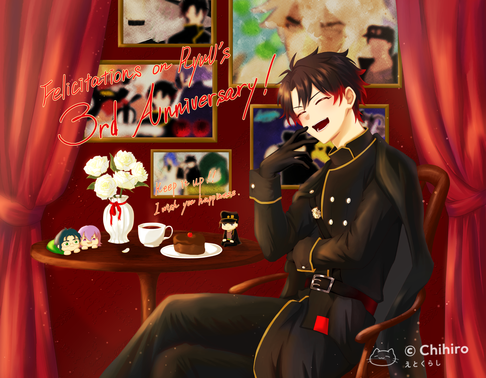

2026-11-14 推し 祝えや踊れや！ 我が推し、RyuUさんの三周年記念だよ！！！ 祝えや踊れやぁッ！！！……はい、のっけから失礼しました。どうも、Chihiroです。さて、冒頭にもある通り、本日は我が推しの三周年記念ですよ。いや～、今年もこの日を無事に迎えられて嬉しい限りです！！推しとの出会いは、昨年。2025年6月29日の日曜日。YouTubeで『ド低能だらけのパッショーネ』をぼんやり観ていたときに、ふと目を引くサムネイルがあったんですね。RyuUさんの『漢字でGO』の動画です。私それまで、声真似って好きな部類じゃなかったんですよね。なんというか、おそらく食わず嫌いみたいなところだと思っているんですけど。聞いていると、ちょっとした不快感が芽生えるくらいには苦手でした。でも、この動画はめちゃくちゃ面白かったんです。滝のように出てくるジョジョスラングに、勢いのある編集、的確な効果音とBGM。声真似以前の観点から、その動画に惹かれていきましたね。ジョジョ自体は、兄の影響で観ていました。ただどちらかというと、MADとか、ゆっくり実況で使われるスラングのほうとか、そういう方面で親しみがあったんです。だから、RyuUさんの動画を観たあと、作品をもう一度観直したんです。毎日一話、休日はワンクール分。大人になってから改めて観るジョジョは、小学生のときには味わえない魅力で溢れていましたね。もともと五部は好きで、いろんな動画を観漁っていたんですがね。作品全体としての面白さに、あのときようやく気付いた気がします。はじめて見つけたその日から、RyuUさんの動画を二週間くらい観漁っていましたね。今のところのお気に入りは『薔薇と椿』です。そのときちょうど最新動画だったので、けっこう繰り返し観ていました。ぜんぶ「お」をつければ済むと思っているゲームと男、面白いです。それから、初めて観た配信がスターレイルの初回だったんですよね。ちょうど主人公の名前を決めているタイミングでした。そこで興味を持ったんです。「この男、おもしれーかも……」と。私は自分を面白いと言ってくれる人が好きですが、それ以上に、私が面白いと思った人に興味が湧きます。少女漫画の「おもしれー女……」というイケメンの立場です。べつにイケメンじゃないです。それからの日々はまぁ、あり得ん勢いで配信を追いかけていきましたね。まだ観れていない過去配信もありますが、興味が出てくると止まらなくなる性分でして。配信の告知が知りたくて、ツイッターもはじめちゃいましたね。私、高校生のときに、SNSをやっていないことを公言していたんです。そのとき同じクラスの超絶美少女に「SNSなんかやらないほうがいいよ。悪意の巣窟だもん」と言われて。それ以来「一生SNSやらねえ！」と心に決めていたんですけどね。はじめちゃいました。まぁ今年の八月でやめたんですけどね。それでもRyuUさんの告知や日常的な小さなつぶやきが見れて、すごく楽しかったです。ファンの人のイラストも見れたり感想を知れたりで、嬉しかったなぁ。連用日記にも、事細かくRyuUさんのことが書いてあります。今読み返すと赤面ものなんですけど、当時はかなり本気で書いていたんですよ。声真似力や動画編集力もそうですけど、声真似メンバーや仲間に対して楽しませよう、盛り上げようとするRyuUさんの性格が、めちゃくちゃ好きで。ツイッターの過去投稿や雑談配信でも言っているんですけど、仲の良い友達がいらっしゃるようで。なんか、絶対RyuUさんの友達、RyuUさんといるの楽しいだろうなって想像できます。おもしれー男であるうえにいい奴なんですよ、我が推し。痛風になってからは自分の体調にも気を使っているみたいですし、夜は散歩しているみたいですし。いいところがたくさんあります。特に好きなのは、やっぱり地声ですね。私表現力高くないので、うまく伝えられないんですけど、なんというか、声の通りはいいのに若干掠れているような。なんて言えばいいんだろう。この人が声優だったら、どのキャラを当てても一発でわかる感じ。ふとした瞬間は小野D（承太郎の声優、小野大輔さん）に聞こえるけど、でも決して小野Dじゃない魅力。伝わるかなぁ、伝わるといいなぁ。パチンコやギャンブル、ガチャ廃なところは、正直推しであっても眉間にしわが寄りますが、まぁそれもRyuUさんの魅力です。推しのすべてを手放しでほめられるほど私はできた人間ではない、それが悔しい今日この頃ですけども。まぁそんなことはどうでもいいんですよ。とにかく私の日常は、RyuUさんと出会ってからぽかぽかあったかいんですよ。動画が投稿されれば嬉しいし、配信があれば全力待機するし。RyuUさんがいてくれたから、今の私があるんです。大げさではなく、ほんとうに。当時の私の死んでいた心を照らしてくれた、私のなかの英雄です。いまでもずっと、これからもずっと、RyuUさん自身が趣味としての配信活動に飽きるその日まで。その存在に感謝しながら、楽しませてもらおうと思っています。そんな推しの三周年を祝って、今年もイラストを描きました。今年のイラストはかなり気合を入れましたよ！！！去年も描かせてもらったんですけど、そのときはまだビジュアルが発表されていなかったんですよね。なので、YouTubeのスタンプとtenさんのイラストを参考に描きました。あのイラストもかなり気に入っていたのですが、今年のはそれを超えてきました。描いてる途中「うっわ天才か？」「推し可愛すぎかよ」「えっやばっガチでいい！」とか叫んでいました。……まぁいつもこんな感じなんですけどね。うまく描くコツは、自分でしっくり来たときにめちゃくちゃ褒めることです。ほんとうは旧アイコンのほうを壁にかけて石仮面みたいにしたかったんですけど、普通に忘れました。ラフ画と仕上がりが違うのは日常茶飯事です。とにかく、愛が伝わるように描きました。……もうツイッターをやっていないから、この愛が届くかはわかりません。それでも精一杯愛をこめて描いたものだから、どこかで伝わるはず。今日すぐじゃなくても、一か月後、一年後、その先でも。ふとネットサーフィンしたときに、ちらっと見つけてもらえたら。そう考えるだけで、死ぬほど嬉しくて踊っちゃうぜ！改めて、RyuUさん、三周年おめでとうございます！！！これからもみんなで、RyuUさんの活動を楽しみながら見守っていこうね！！！
祝えや踊れや！
……はい、のっけから失礼しました。
どうも、Chihiroです。
さて、冒頭にもある通り、本日は我が推しの三周年記念ですよ。
いや～、今年もこの日を無事に迎えられて嬉しい限りです！！
推しとの出会いは、昨年。
2025年6月29日の日曜日。
YouTubeで『ド低能だらけのパッショーネ』をぼんやり観ていたときに、ふと目を引くサムネイルがあったんですね。
RyuUさんの『漢字でGO』の動画です。
私それまで、声真似って好きな部類じゃなかったんですよね。
なんというか、おそらく食わず嫌いみたいなところだと思っているんですけど。
聞いていると、ちょっとした不快感が芽生えるくらいには苦手でした。
でも、この動画はめちゃくちゃ面白かったんです。
滝のように出てくるジョジョスラングに、勢いのある編集、的確な効果音とBGM。
声真似以前の観点から、その動画に惹かれていきましたね。
ジョジョ自体は、兄の影響で観ていました。
ただどちらかというと、MADとか、ゆっくり実況で使われるスラングのほうとか、そういう方面で親しみがあったんです。
だから、RyuUさんの動画を観たあと、作品をもう一度観直したんです。
毎日一話、休日はワンクール分。
大人になってから改めて観るジョジョは、小学生のときには味わえない魅力で溢れていましたね。
もともと五部は好きで、いろんな動画を観漁っていたんですがね。
作品全体としての面白さに、あのときようやく気付いた気がします。
はじめて見つけたその日から、RyuUさんの動画を二週間くらい観漁っていましたね。
今のところのお気に入りは『薔薇と椿』です。
そのときちょうど最新動画だったので、けっこう繰り返し観ていました。
ぜんぶ「お」をつければ済むと思っているゲームと男、面白いです。
それから、初めて観た配信がスターレイルの初回だったんですよね。
ちょうど主人公の名前を決めているタイミングでした。
そこで興味を持ったんです。
「この男、おもしれーかも……」と。
私は自分を面白いと言ってくれる人が好きですが、それ以上に、私が面白いと思った人に興味が湧きます。
少女漫画の「おもしれー女……」というイケメンの立場です。
べつにイケメンじゃないです。
それからの日々はまぁ、あり得ん勢いで配信を追いかけていきましたね。
まだ観れていない過去配信もありますが、興味が出てくると止まらなくなる性分でして。
配信の告知が知りたくて、ツイッターもはじめちゃいましたね。
私、高校生のときに、SNSをやっていないことを公言していたんです。
そのとき同じクラスの超絶美少女に「SNSなんかやらないほうがいいよ。悪意の巣窟だもん」と言われて。
それ以来「一生SNSやらねえ！」と心に決めていたんですけどね。
はじめちゃいました。
まぁ今年の八月でやめたんですけどね。
それでもRyuUさんの告知や日常的な小さなつぶやきが見れて、すごく楽しかったです。
ファンの人のイラストも見れたり感想を知れたりで、嬉しかったなぁ。
連用日記にも、事細かくRyuUさんのことが書いてあります。
今読み返すと赤面ものなんですけど、当時はかなり本気で書いていたんですよ。
声真似力や動画編集力もそうですけど、声真似メンバーや仲間に対して楽しませよう、盛り上げようとするRyuUさんの性格が、めちゃくちゃ好きで。
ツイッターの過去投稿や雑談配信でも言っているんですけど、仲の良い友達がいらっしゃるようで。
なんか、絶対RyuUさんの友達、RyuUさんといるの楽しいだろうなって想像できます。
おもしれー男であるうえにいい奴なんですよ、我が推し。
痛風になってからは自分の体調にも気を使っているみたいですし、夜は散歩しているみたいですし。
いいところがたくさんあります。
特に好きなのは、やっぱり地声ですね。
私表現力高くないので、うまく伝えられないんですけど、なんというか、声の通りはいいのに若干掠れているような。
なんて言えばいいんだろう。
この人が声優だったら、どのキャラを当てても一発でわかる感じ。
ふとした瞬間は小野D（承太郎の声優、小野大輔さん）に聞こえるけど、でも決して小野Dじゃない魅力。
伝わるかなぁ、伝わるといいなぁ。
パチンコやギャンブル、ガチャ廃なところは、正直推しであっても眉間にしわが寄りますが、まぁそれもRyuUさんの魅力です。
推しのすべてを手放しでほめられるほど私はできた人間ではない、それが悔しい今日この頃ですけども。
まぁそんなことはどうでもいいんですよ。
とにかく私の日常は、RyuUさんと出会ってからぽかぽかあったかいんですよ。
動画が投稿されれば嬉しいし、配信があれば全力待機するし。
RyuUさんがいてくれたから、今の私があるんです。
大げさではなく、ほんとうに。
当時の私の死んでいた心を照らしてくれた、私のなかの英雄です。
いまでもずっと、これからもずっと、RyuUさん自身が趣味としての配信活動に飽きるその日まで。
その存在に感謝しながら、楽しませてもらおうと思っています。
そんな推しの三周年を祝って、今年もイラストを描きました。

今年のイラストはかなり気合を入れましたよ！！！
去年も描かせてもらったんですけど、そのときはまだビジュアルが発表されていなかったんですよね。
なので、YouTubeのスタンプとtenさんのイラストを参考に描きました。
あのイラストもかなり気に入っていたのですが、今年のはそれを超えてきました。
描いてる途中「うっわ天才か？」「推し可愛すぎかよ」「えっやばっガチでいい！」とか叫んでいました。
……まぁいつもこんな感じなんですけどね。
うまく描くコツは、自分でしっくり来たときにめちゃくちゃ褒めることです。
ほんとうは旧アイコンのほうを壁にかけて石仮面みたいにしたかったんですけど、普通に忘れました。
ラフ画と仕上がりが違うのは日常茶飯事です。
とにかく、愛が伝わるように描きました。
……もうツイッターをやっていないから、この愛が届くかはわかりません。
それでも精一杯愛をこめて描いたものだから、どこかで伝わるはず。
今日すぐじゃなくても、一か月後、一年後、その先でも。
ふとネットサーフィンしたときに、ちらっと見つけてもらえたら。
そう考えるだけで、死ぬほど嬉しくて踊っちゃうぜ！
改めて、RyuUさん、三周年おめでとうございます！！！
これからもみんなで、RyuUさんの活動を楽しみながら見守っていこうね！！！